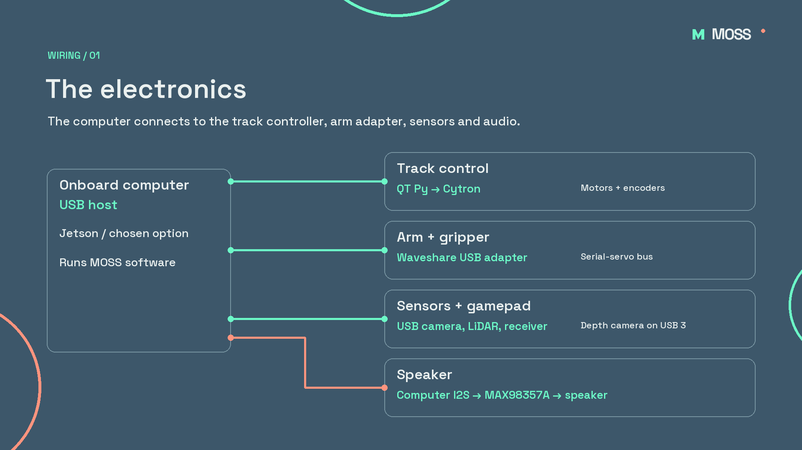
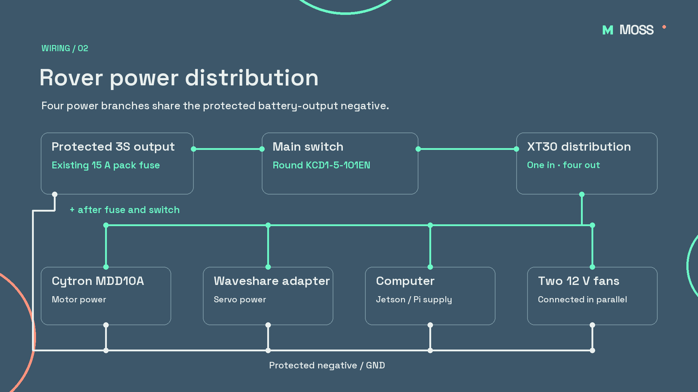
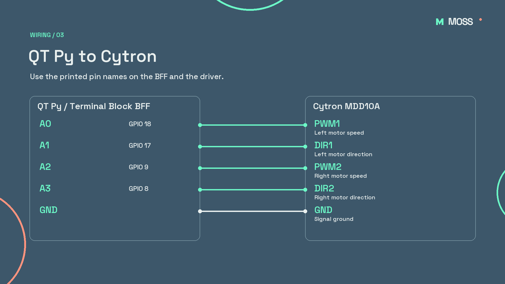
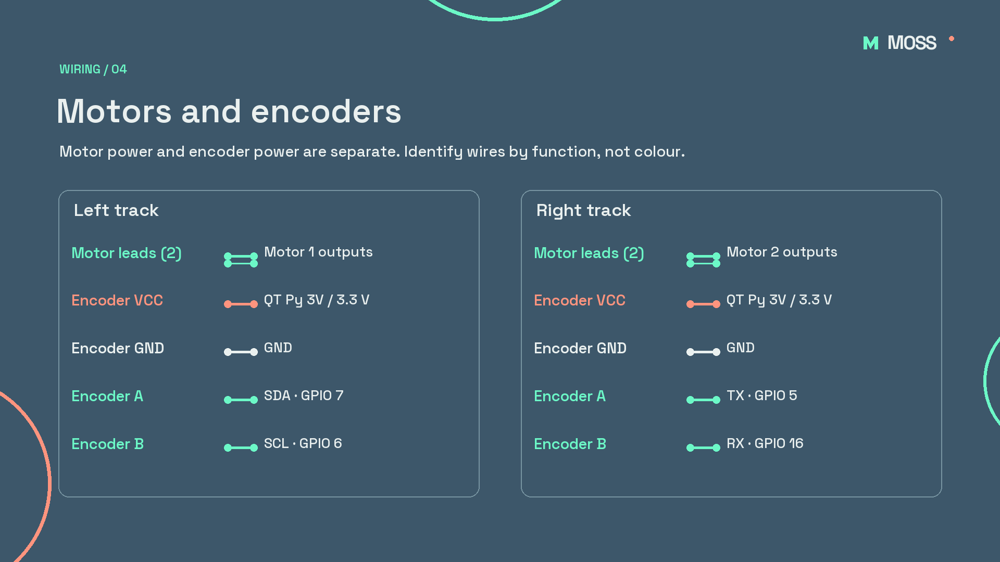
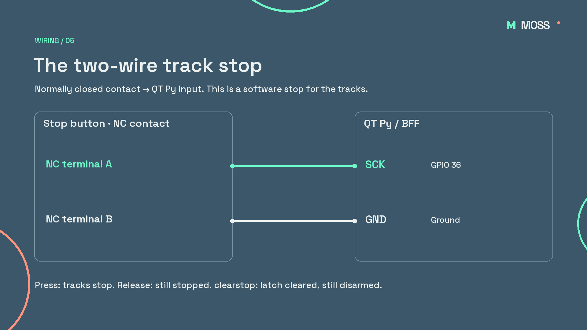
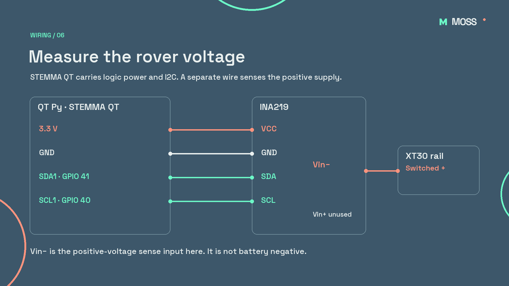
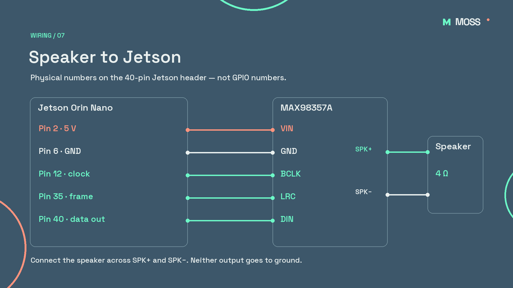
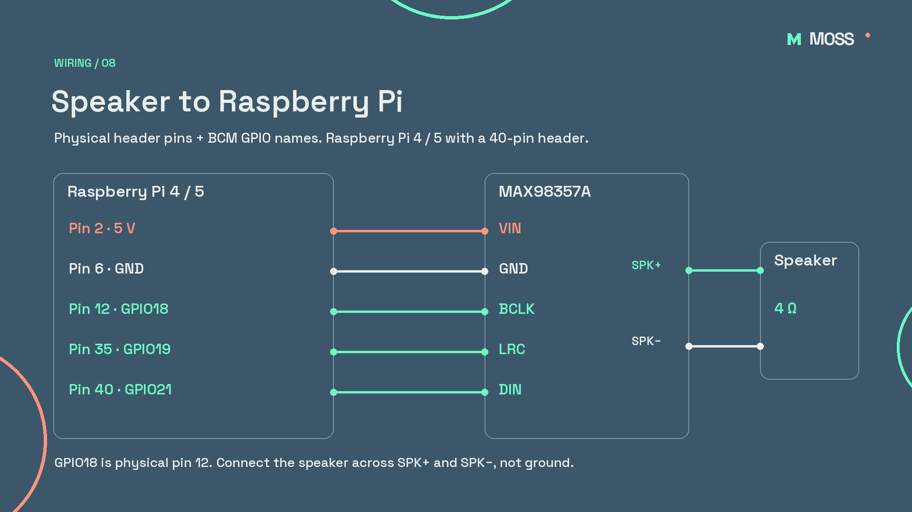

BUILD / ELECTRONICS
MOSS wiring
This guide explains how to connect the electronics listed in the MOSS BOM. The computer talks over USB to a QT Py motor controller and a Waveshare servo adapter. The Cytron MDD10A drives the tracks; the Waveshare adapter controls the arm and gripper.

Connections in this guide
Use this page after mounting the electronics and before closing the hull. Follow the mounting steps for component positions. Left and right mean the rover's left and right when facing forward.
1. Identify the modules
The tables here use the QT Py's printed pin names, such as A0 and SDA. GPIO numbers are included to distinguish them from other ESP32 boards. These connections apply to the QT Py ESP32-S3 listed above.
2. Prepare the power connections
Keep the battery and charger disconnected while making connections. The rover supply and charging inlet are separate branches: the rover uses XT30; the charging inlet uses the matching barrel connectors.

The battery and charging guide contains the charge-path drawing and main-switch connections. A commercial assembled battery does not require the cell-building steps: start with its protected output and a charger suitable for that pack.
Wire the two 12 V fans in parallel on the fourth branch. Connect every branch's negative to the protected battery-output negative, through the distribution return. On the custom common-port battery this is the BMS's C− output, not the raw cell negative.
The round main switch is the separate control that disconnects the rover's supply. Connect fused battery positive to its power input, its switched power output to the XT30 positive rail, and its LED-return terminal to protected output negative. Identify those functions from the switch markings or a continuity check before wiring; the LED terminal is not a power output.
The stop button is a low-current input to the QT Py, described in section 5 below. Do not put it in series with the motor or whole-rover power wiring.
Watch the power-distribution assembly.
3. Connect the QT Py to the Cytron

Use the QT Py/BFF labels in the first column and the Cytron's input labels in the second. Identify labels on the boards rather than counting pins from a photograph that might be flipped.
Connect the left motor's two power wires to motor channel 1 and the right motor's to channel 2. Encoder wires belong to the next table; they do not go on the motor output terminals.
The MDD10A accepts 3.3 V PWM/DIR signals. Its battery input has no reverse-polarity protection, so check the power connector before plugging it into the driver. See the Cytron product documentation.
Use the MDD10A firmware build, even though the source folder still has MDD3A in its name. The compile option is -DMOSS_DRIVER_MDD10A; the build command is here.
4. Connect the motor encoders

In this firmware, SDA/SCL and TX/RX are encoder inputs. They are not being used as their usual I2C and serial interfaces.
Power the encoders from the QT Py's 3V / 3.3 V output, independently of the motors' 12 V power wires. The Hall-encoder version used by this guide must support a 3.3 V supply and 3.3 V output signals. An encoder that requires 5 V needs a separately documented interface; do not put its 5 V outputs directly on QT Py inputs.
Identify the six motor wires by their functions: two motor-power leads, encoder VCC, encoder GND, A and B. Vendors use different wire colours and connector orders. Follow the markings or diagram supplied with the actual motor; the drawing above is a connection list, not a numbered plug orientation. Check each track and its encoder direction during the first test.
For comparison, this JGB37-520 family supplier lists 3.3–5 V encoder power. It is not a universal colour or connector standard.

This connection uses the normally closed (NC) contact of the latching LA16 button. It stops the tracks through the QT Py firmware. It does not disconnect motor power or stop the arm, and it depends on the controller running correctly.
With no power connected, use continuity mode to identify the NC pair: closed when the button is released, open when pressed and latched. Do not choose terminals just by their location or a seller photograph. The two wires on the NC pair have no polarity. Route them together, away from the motor-power wires.
Install the qtpy-mdd3a-v5 firmware, built for MDD10A, before expecting the button to work. It enables the input's pull-up. A button press, open wire or disconnected contact opens the loop and latches a stop. Motor PWM and ramp state are reset to zero; normal arm, drive and timed-test commands cannot override the latch. Earlier firmware does not implement this input.
To recover after a stop:
- Stop the teleoperation/navigation stack with
tools/moss-fly.sh stop and centre the gamepad sticks.
- Release the physical button. The NC loop must remain closed for at least 100 ms.
- From the robot's checkout, run
.venv/bin/python firmware/MOSS_QTPY_MDD3A/bench/moss_bench.py "clearstop". This clears the latch but leaves the firmware disarmed.
- Run
tools/moss-fly.sh check, then restart teleoperation deliberately. The host's usual arming sequence can now run.
The new stop support has been compiled and checked with host tests; installation on the physical rover still requires the supported-track test in section 10. Pressing and then releasing the button must not restart a track by itself.
6. Connect the battery-voltage sensor

Connect the INA219 to the QT Py's STEMMA QT connector with the four-wire STEMMA cable. This connector uses a separate I2C bus; leave the BFF's SDA/SCL encoder terminals as connected above.
The firmware uses Wire1, address 0x40, and reports voltage only. Motor current must not be routed through the INA219 module's small shunt as part of this installation.
For a voltage-only installation, connect the INA219 screw terminal marked Vin− to the positive rail at the XT30 distribution, after the pack fuse and main switch. Use a short, secured copper sense lead, 18 AWG in this harness. Leave Vin+ unused. The sensor's ground reference comes through STEMMA QT to the common protected-output ground.
Vin− is not battery negative. It is the negative side of the module's current-sense shunt; the chip measures bus voltage from this terminal to GND. In this voltage-only wiring it is connected to the positive voltage being measured. Do not connect the 12 V rail to the sensor's logic-power VIN/VCC pin.
The four main power branches bypass the INA219 shunt. The displayed reading is the rover's switched supply voltage at the distribution, which can differ slightly from a reading directly on the pack under load. Compare it with a multimeter at that same node. See the INA219 datasheet, bus-voltage measurement.
Reference: QT Py pinout and INA219 pinout.
7. Connect the arm and gripper
- Connect the Waveshare Bus Servo Adapter A to the computer with a USB data cable and set its control-mode selector for USB operation.
- Connect its separate DC input to the servo-power branch. The adapter specifies a 9–12.6 V input, matched to the installed servos, and uses a 5.5 × 2.1 mm DC socket. Check polarity on the actual adapter and cable.
- Connect the arm and gripper using their serial-servo bus cables. Follow the connector markings for supply, ground and data; keep the cables clear of the joints.
- Assign a unique ID to each servo before commanding the assembled arm. Use the arm setup and calibration instructions for the original SO-101 configuration.
The SO-102 variant needs its own joint/ID and calibration instructions; the original SO-101 servo table must not be presented as the SO-102 setup.
Reference: Waveshare adapter documentation.
8. Connect the USB devices
Plan for six device connections with this full configuration. A hub can provide additional ports, but it is an option for the chosen computer, not a mandatory common part. Check its power budget and fit in the hull. A USB 2 hub does not provide a USB 3 connection for the depth camera.
The MDD10A is connected to the QT Py, not directly to a computer USB port. The arm servos likewise connect to their adapter, not individually to USB.
9. Connect the speaker
Jetson Orin Nano

This table uses physical pin numbers on the Jetson's 40-pin header, not GPIO numbers. It describes the I2S2 setup recorded for the Orin Nano developer kit under JetPack 6.
Connect the 4 Ω speaker across SPK+ and SPK−, using the module's printed output labels. Neither speaker output is a ground connection. The amplifier receives 5 V here, not battery voltage. The MAX98357A pinout describes the supply, digital inputs and bridged speaker output.
The NVIDIA carrier-board specification, expansion header labels these signals I2S0. The existing JetPack audio setup uses the I2S2 name; the physical header numbers above identify the wires in either case.
Then follow the Jetson audio setup to enable I2S2 and test playback.
Raspberry Pi 4 / 5

Use the Raspberry Pi's 40-pin header. The physical pin positions for these five connections happen to match the Jetson above; the GPIO names and audio configuration are different. Locate pin 1 on the actual board before counting pins.
GPIO18 means physical pin 12, not pin 18. Connect the speaker across SPK+ and SPK−, with neither output connected to ground. Power the amplifier from 5 V, never from the rover's battery voltage, and allow at least 500 mA of additional capacity in the Pi's 5 V supply for the amplifier.
Follow Adafruit's Raspberry Pi audio setup for the operating-system configuration and playback test. The Jetson's I2S2 commands do not apply to Raspberry Pi OS. The Orange Pi needs its own pinout and audio setup.
Sources: Adafruit MAX98357A Raspberry Pi wiring, Raspberry Pi header layout, and Raspberry Pi I2S GPIO assignments.
10. Check and test one part at a time
- With battery and charger disconnected, inspect the finished connections, confirm polarity and check for unintended shorts between supply and ground. Secure the cables away from tracks, fans and arm joints.
- Check the stop button's NC contact and its SCK-to-GND loop. With v5 firmware,
status reports stop_open and stop_latched; both must be false before driving.
- Power and identify the computer and USB boards first. Check that the QT Py firmware banner reports
driver mdd10a.
- Support the rover with both tracks clear. Use the one-second motor tests, one track at a time, and verify direction and encoder changes. Press the stop button during each test: the track must stop, remain stopped after button release and reject another test until
clearstop. Check the same behaviour with either stop-loop wire unplugged.
- Scan the servo bus and confirm IDs before trying a small arm movement in clear space. Follow the arm-specific calibration procedure.
- Check the cameras, LiDAR, controller and speaker. Follow Software setup for device configuration and the first teleoperation run.
The tools/moss-fly.sh check software check reads the stop flags when the firmware provides them. It does not verify power polarity, cable ratings or the button's physical response.
Back to mounting instructions · BOM · Software setup